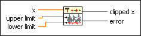

Y[i]=Clip{X[i]} PtByPt VI
Owning Palette: Signal Operation PtByPt VIs
Requires: Full Development System
Clips x to within the bounds specified by upper limit and lower limit.
This VI is similar to the Y[i]=Clip{X[i]} VI.
 | Note By default, reentrant execution is enabled in all Point By Point VIs. |

 Add to the block diagram Add to the block diagram |
 Find on the palette Find on the palette |